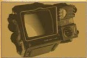

Llega el parche de Inventario
Este nuevo parche llega a Fallout 76 para ayudar a organizar mejor nuestro inventario entre otras cosas. A continuación las novedades mas importantes:
Aumento del ajijo, de 800 a 1200.
Nuevas pestañas en el Pip-Boy, ahora armaduras y atuendos están por separado y comida y bebida estan separadas de ayuda, lo cual agilizará mucho la búsqueda de nuestros objetos Tambien se incorpora la pestaña "nuevo" donde encontraremos los últimos items recogidos en la sesión actual ordenados en el orden en el que se recogen.
Nueva función "peso apilado" nos muestra la el peso total de un item que tengamos en cantidad (Tip: atentos con los items de ayuda y comida y bebida, que suelen ser los que mas se acumulan sin darse cuenta!).